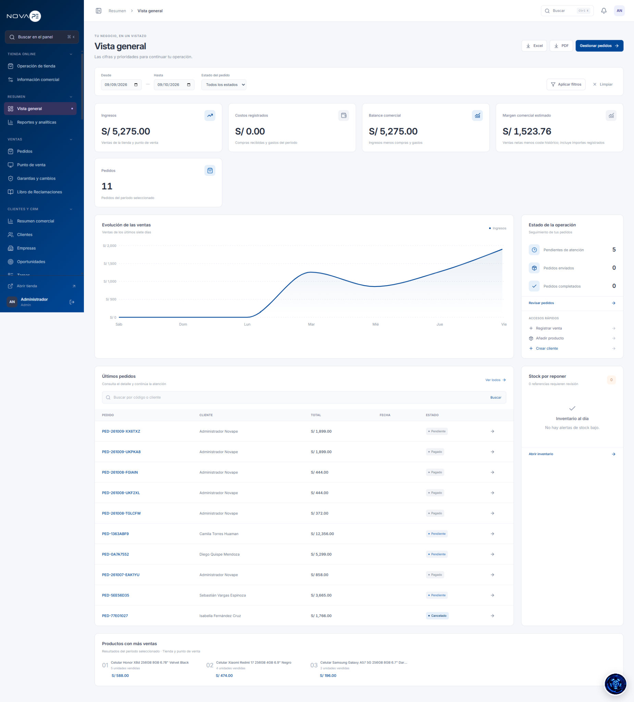

MODO ADMINISTRADOR

Gestión completa de la tienda
El panel administrador permite controlar la operación de NOVAPE desde una sola interfaz: ventas, pedidos, clientes, inventario y reportes.
Ventas
Pedidos
Clientes
Inventario
Reportes
También muestra indicadores como ingresos, margen comercial y evolución de ventas para apoyar la toma de decisiones.
01
GESTIÓN DEL NEGOCIO
Más que una tienda online
NOVAPE incorpora un panel administrativo pensado para operar el negocio desde una sola plataforma, no solo para publicar productos.
Compras y finanzas
Compras, proveedores y gastos para controlar el flujo interno.
Marketing
Promociones, cupones, banners, campañas y carritos abandonados.
Configuración
Trabajadores, roles, permisos, métodos de pago y ajustes del sistema.
Estas funciones muestran cómo un proyecto web puede integrar ventas, administración y operación real de una empresa.